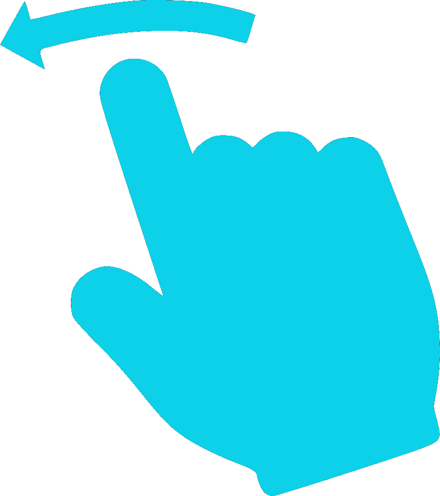

<ion-header>
  <ion-toolbar color="primary">
    <ion-buttons slot="start">
      <ion-back-button defaultHref="/subscriber"></ion-back-button>
    </ion-buttons>
    <ion-title>{{subscriber.name}}-notifications</ion-title>
    <ion-icon *ngIf="connectivity" name="{{subscriber.icon}}" size="large" slot="end" margin="20px"></ion-icon>
    <ion-spinner *ngIf="!connectivity" name="bubbles" slot='end' color="light" margin="20px"></ion-spinner>
  </ion-toolbar>
</ion-header>

<ion-content *ngIf="connectivity">
  <ion-grid>
    <ion-row>
      <ion-col>
        <ion-list color="white" no-padding>
          <ion-item-sliding #sliding *ngFor="let boodschap of boodschappen; let i = index">
          <ion-item >
            <ion-label>
              {{boodschap}}
            </ion-label>
            
          </ion-item>
          <ion-item-options side="end">
            <button ion-button style="background-color: #f98239; color: white;" (click)="confirmMelding(i)">
              <ion-icon name="checkmark-circle" size="large" slot="end"></ion-icon>
            </button>
          </ion-item-options>
        </ion-item-sliding>
        </ion-list>
      </ion-col>
    </ion-row>
  </ion-grid>
</ion-content>
<ion-content *ngIf="!connectivity" style="background-color: #E5E9EC;" color="#E5E9EC">
  
  <h1 text-center>Oh nee!</h1>
  <h4 text-center style="font-family: 'Roboto Condensed', sans-serif;">Geen internet gevonden.<br>Controleer uw verbinding.</h4>
</ion-content>

